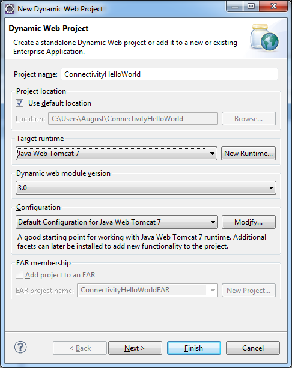

Consuming Back-End Systems (Java Web Tomcat 7)
This step-by-step tutorial demonstrates how a sample Web application consumes a back-end system via HTTP(S) by using the connectivity service. For simplicity, instead of using a real back-end system, we use a second sample Web application containing BackendServlet, which mimics the back-end system and can be called via HTTP(S).
The servlet code, the web.xml content, and the destination file (backend-no-auth-destination) used in this tutorial are mapped to the connectivity sample project located in <SDK_location>/samples/connectivity. You can directly import this sample in your Eclipse IDE. For more information, see Importing Samples as Eclipse Projects.
The tutorial guides you through the following sections:
In the on-demand to on-premise connectivity end-to-end scenario, different user roles are involved. The particular steps for the relevant roles are described below:
-
IT Administrator - Sets up and configures the Cloud connector. Scenario steps:
-
Downloads the Cloud connector from https://tools.hana.ondemand.com/#cloud
-
Installs the connector.
-
Establishes an SSL tunnel from the connector to an SAP Cloud Platform.
-
Configures the exposed back-end systems and resources.
-
-
Application Developer - Develops Web applications using destinations. Scenario steps:
-
Installs the Eclipse IDE, SAP Cloud Platform Tools for Java, and SDK.
-
Develops a Java EE application using the destination API.
-
Configures connectivity destinations as resources in the web.xml file.
-
Configures connectivity destinations via the SAP Cloud Platform server adapter in Eclipse IDE.
-
Deploys the Java EE application locally and on the cloud.
-
- Account Operator - Deploys Web applications, configures
their destinations, and conducts tests. Scenario steps:
-
Obtains a ready Java EE application WAR file.
-
Deploys the Java EE application to an SAP Cloud Platform account.
-
Uploads the connectivity destination configuration via the console client.
-
Tests the Java EE application on a local server and deploys it again to a SAP Cloud Platform account.
-
For more information, see SAP Cloud Platform Cloud Connector.
- You have downloaded and configured the Cloud connector. For more information, see SAP Cloud Platform Cloud Connector.
- You have downloaded and set up your Eclipse IDE, SAP Cloud Platform Tools for
Java, and SDK.
For more information, see Setting Up the Development Environment.
Note You need to install SDK for Java Web Tomcat 7.
This tutorial uses a Web application that responds to a request with a ping as a sample back-end system. The connectivity service supports HTTP and HTTPS as protocols and provides an easy way to consume REST-based Web services.
To set up the sample application as a back-end system, see Setting Up an Application as a Sample Back-End System.
Instead of the sample back-end system provided in this tutorial, you can use other systems to be consumed through REST-based Web services.
Once the back-end application is running on your local Tomcat, you need to configure the ping service, provided by the application, in your installed Cloud connector. This is required since the Cloud connector only allows access to white-listed back-end services. To do this, follow the steps below:
- Open the Cloud connector and from the Content navigation (in left), choose Access Control.
- Under Mapping Virtual To Internal System, choose the
Add button and define an entry as shown on the
following screenshot. The Internal Host must be the
physical host name of the machine on which the Tomcat of the back-end
application is running.

- Choose Save. The newly mapped system appears in the table.
- Click on it. A new table, Resources Accessible On <host>:<port>, opens below.
- Specify the URL paths /BackendAppHttpBasicAuth and
/BackendAppHttpNoAuth as accessible resources, as
shown on the screenshot below. When defining the paths, make sure you have
selected the Path and all sub-paths option.

- Open the Java EE perspective of the Eclipse IDE.
- From the Eclipse main menu, choose
 File
File  New Dynamic Web Project
New Dynamic Web Project  .
. - In the Project name field, enter ConnectivityHelloWorld .
- In the Target Runtime pane, select Java Web Tomcat 7 as the runtime you want to use to deploy the application.
- In the Configuration pane, leave the default configuration.
- Choose Finish to finalize the creation of your project.

- From the ConnectivityHelloWorld context menu, choose New Servlet .
- Enter hello as the Java package and ConnectivityServlet as the Class name and choose Next.
- In the URL mappings field, select /ConnectivityServlet and choose Edit.
- In the Pattern field, replace the current value with just
"/". In this way, the servlet will be mapped as a
welcome page for the application.

- Choose Finish so that the ConnectivityServlet.java servlet is created and opened in the Java editor.
- Go to ConnectivityHelloWorld WebContent WEB-INF and open the web.xml file.
- To consume connectivity configuration using JNDI, you need to define the
ConnectivityConfiguration API as a resource in the
web.xml file. Below is an example of a
ConnectivityConfiguration resource, named
connectivityConfiguration.
<resource-ref> <res-ref-name>connectivityConfiguration</res-ref-name> <res-type>com.sap.core.connectivity.api.configuration.ConnectivityConfiguration</res-type> </resource-ref>NoteDestination backend-no-auth-destination will be looked-up via ConnectivityConfiguration JNDI lookup. For more information, see ConnectivityConfiguration API.
-
Replace the entire servlet class to make use of the configuration API. The configuration API is visible by default for cloud applications and must not be added explicitly to the application class path.
package com.sap.cloud.sample.connectivity; import java.io.IOException; import java.io.InputStream; import java.io.OutputStream; import java.net.HttpURLConnection; import java.net.InetSocketAddress; import java.net.Proxy; import java.net.URL; import javax.annotation.Resource; import javax.naming.Context; import javax.naming.InitialContext; import javax.servlet.ServletException; import javax.servlet.http.HttpServlet; import javax.servlet.http.HttpServletRequest; import javax.servlet.http.HttpServletResponse; import org.slf4j.Logger; import org.slf4j.LoggerFactory; import com.sap.cloud.account.TenantContext; import com.sap.core.connectivity.api.configuration.ConnectivityConfiguration; import com.sap.core.connectivity.api.configuration.DestinationConfiguration; /** * Servlet class making http calls to specified http destinations. * Destinations are used in the following example connectivity scenarios:<br> * - Connecting to an outbound Internet resource using HTTP destinations<br> * - Connecting to an on-premise backend using on premise HTTP destinations,<br> * where the destinations have no authentication.<br> */ public class ConnectivityServlet extends HttpServlet { @Resource private TenantContext tenantContext; private static final long serialVersionUID = 1L; private static final int COPY_CONTENT_BUFFER_SIZE = 1024; private static final Logger LOGGER = LoggerFactory.getLogger(ConnectivityServlet.class); private static final String ON_PREMISE_PROXY = "OnPremise"; /** {@inheritDoc} */ @Override public void doGet(HttpServletRequest request, HttpServletResponse response) throws ServletException, IOException { HttpURLConnection urlConnection = null; String destinationName = request.getParameter("destname"); // The default request to the Servlet will use outbound-internet-destination if (destinationName == null) { destinationName = "outbound-internet-destination"; } try { // Look up the connectivity configuration API Context ctx = new InitialContext(); ConnectivityConfiguration configuration = (ConnectivityConfiguration) ctx.lookup("java:comp/env/connectivityConfiguration"); // Get destination configuration for "destinationName" DestinationConfiguration destConfiguration = configuration.getConfiguration(destinationName); if (destConfiguration == null) { response.sendError(HttpServletResponse.SC_INTERNAL_SERVER_ERROR, String.format("Destination %s is not found. Hint: Make sure to have the destination configured.", destinationName)); return; } // Get the destination URL String value = destConfiguration.getProperty("URL"); URL url = new URL(value); String proxyType = destConfiguration.getProperty("ProxyType"); Proxy proxy = getProxy(proxyType); urlConnection = (HttpURLConnection) url.openConnection(proxy); // Insert the required header in the request for on-premise destinations injectHeader(urlConnection, proxyType); // Copy content from the incoming response to the outgoing response InputStream instream = urlConnection.getInputStream(); OutputStream outstream = response.getOutputStream(); copyStream(instream, outstream); } catch (Exception e) { // Connectivity operation failed String errorMessage = "Connectivity operation failed with reason: " + e.getMessage() + ". See " + "logs for details. Hint: Make sure to have an HTTP proxy configured in your " + "local environment in case your environment uses " + "an HTTP proxy for the outbound Internet " + "communication."; LOGGER.error("Connectivity operation failed", e); response.sendError(HttpServletResponse.SC_INTERNAL_SERVER_ERROR, errorMessage); } } private Proxy getProxy(String proxyType) { String proxyHost = null; int proxyPort; if (ON_PREMISE_PROXY.equals(proxyType)) { // Get proxy for on-premise destinations proxyHost = System.getenv("HC_OP_HTTP_PROXY_HOST"); proxyPort = Integer.parseInt(System.getenv("HC_OP_HTTP_PROXY_PORT")); } else { // Get proxy for internet destinations proxyHost = System.getProperty("http.proxyHost"); proxyPort = Integer.parseInt(System.getProperty("http.proxyPort")); } return new Proxy(Proxy.Type.HTTP, new InetSocketAddress(proxyHost, proxyPort)); } private void injectHeader(HttpURLConnection urlConnection, String proxyType) { if (ON_PREMISE_PROXY.equals(proxyType)) { // Insert header for on-premise connectivity with the consumer account name urlConnection.setRequestProperty("SAP-Connectivity-ConsumerAccount", tenantContext.getAccountName()); } } private void copyStream(InputStream inStream, OutputStream outStream) throws IOException { byte[] buffer = new byte[COPY_CONTENT_BUFFER_SIZE]; int len; while ((len = inStream.read(buffer)) != -1) { outStream.write(buffer, 0, len); } } }NoteThe given servlet can be run with different destination scenarios, for which user should specify the destination name as a requested parameter in the calling URL. In the case of on-premise connection to a back-end system, the destination names should be backend-no-auth-destination. That is, it will be accessed at: <application_URL>/?destname=backend-no-auth-destination
NoteWhen accessing a destination with a specific authentication type, use AuthenticationHeaderProvider API to get authentication headers and then inject them in all requests to this destination.
-
Save the Java editor and make sure the project compiles without errors.
We only recommend but not obligate that you create the destination before starting the application.
-
To deploy your Web application locally or on the cloud, follow the steps described in the respective pages:
-
Once the application is successfully deployed locally or on the cloud, the application issues an exception saying that the backend-no-auth-destination destination has not been specified yet:
HTTP Status 500 - Destination backend-no-auth-destination is not found. Hint: Make sure to have the destination configured.
-
As a next step, you need to configure backend-no-auth-destination.
For more information, see ConnectivityConfiguration API.
To configure the destination in SAP Cloud Platform, you need to use the virtual host name (virtualpingbackend) and port (1234) specified in one of the previous steps on the Cloud connector's Access Control tab page.
- On-premise destinations support HTTP connections only.
- The connection from an application to the Cloud connector (through the tunnel) is encrypted on TLS level. Also, you can choose between using HTTP or HTTPS to hop from the Cloud connector to the back end.
- In the Eclipse IDE, open the Servers view and double-click on <application>.<account> to open the cloud server editor.
- Open the Connectivity tab page.
- In the All Destinations section, choose
 to create a new destination with the name
backend-no-auth-destination.
to create a new destination with the name
backend-no-auth-destination. - Use the following configuration:
Name=backend-no-auth-destination Type=HTTP URL=http://virtualpingbackend:1234/BackendAppHttpNoAuth/noauth Authentication=NoAuthentication ProxyType=OnPremise CloudConnectorVersion=2

- Save the destination.
- The Connectivity editor automatically saves the configuration in the cloud.
- Call the URL that references the cloud application again in the internal Web browser. The application should now return the ping response.
You can monitor the state and logs of your Web application deployed on SAP Cloud Platform.
For more information, see Using Logs in the Eclipse IDE.